Piloter avec des faits
Des KPI partagés remplacent les ressentis : chaque équipe lit la même réalité.
Data Analyst · disponible pour de nouveaux défis
Data Analyst avec 3 ans d’expérience en analyse, reporting BI, automatisation et IA. Je construis des solutions qui rendent la donnée utile, concrètement, aux équipes métier.
Dans une entreprise, la donnée est partout : appels, CRM, fichiers, outils métier. Mon travail est de la rendre fiable, lisible et décisionnelle.
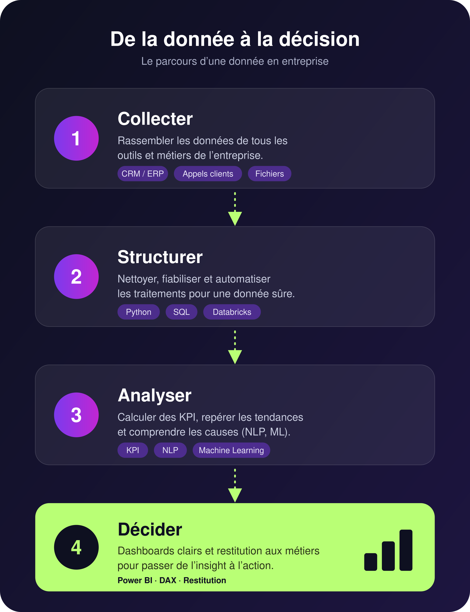
Des KPI partagés remplacent les ressentis : chaque équipe lit la même réalité.
Automatiser les traitements récurrents libère les équipes pour l’analyse et l’action.
Le NLP et le machine learning révèlent des irritants et des tendances cachés dans le texte.
Expérience · UGIPS Gestion (AXA)
Transformer plus de 10 000 retours clients, issus d’appels retranscrits, en indicateurs capables d’orienter les actions managériales.
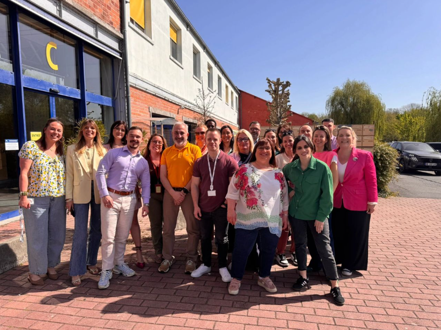
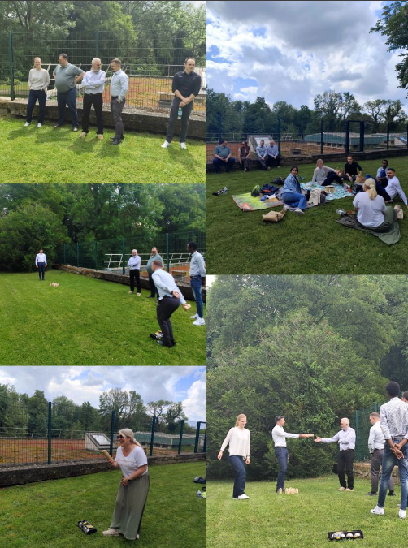
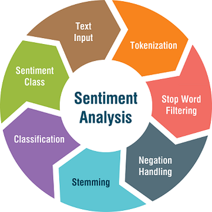
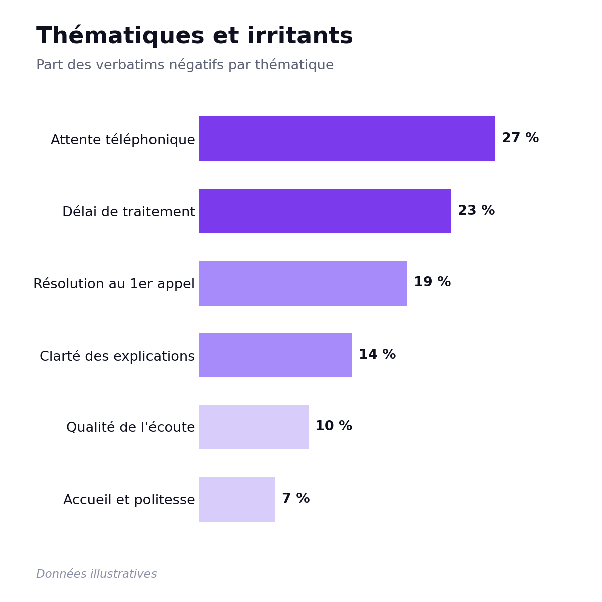
Projet personnel · Data et IA
Un prototype conversationnel qui transforme une question métier en requête SQL, l’exécute en lecture seule et restitue les résultats en tableaux et visualisations.
Vidéo à ajouter :assets/assistant-data-ai-demo.mp4
Application en ligne · démo en vidéo
Une sélection de graphiques issus de mes analyses. Clique sur une image pour l’agrandir.
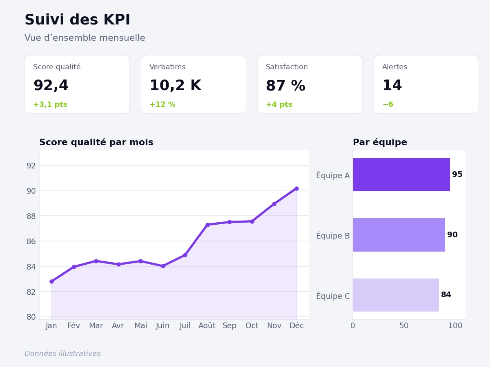
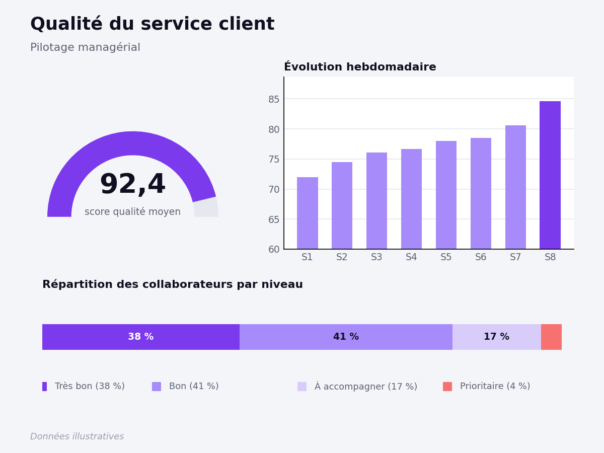
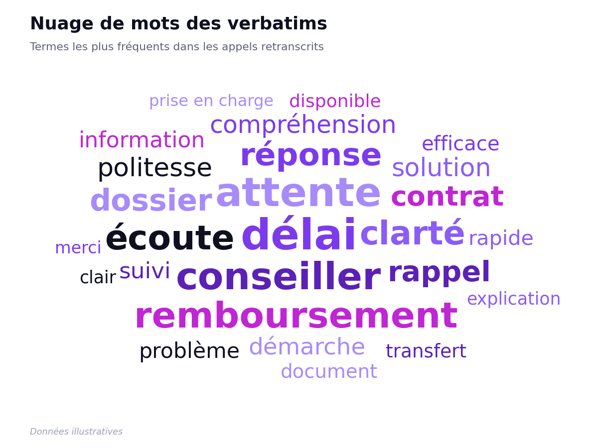
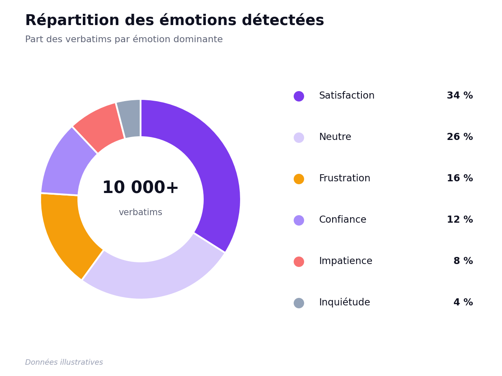
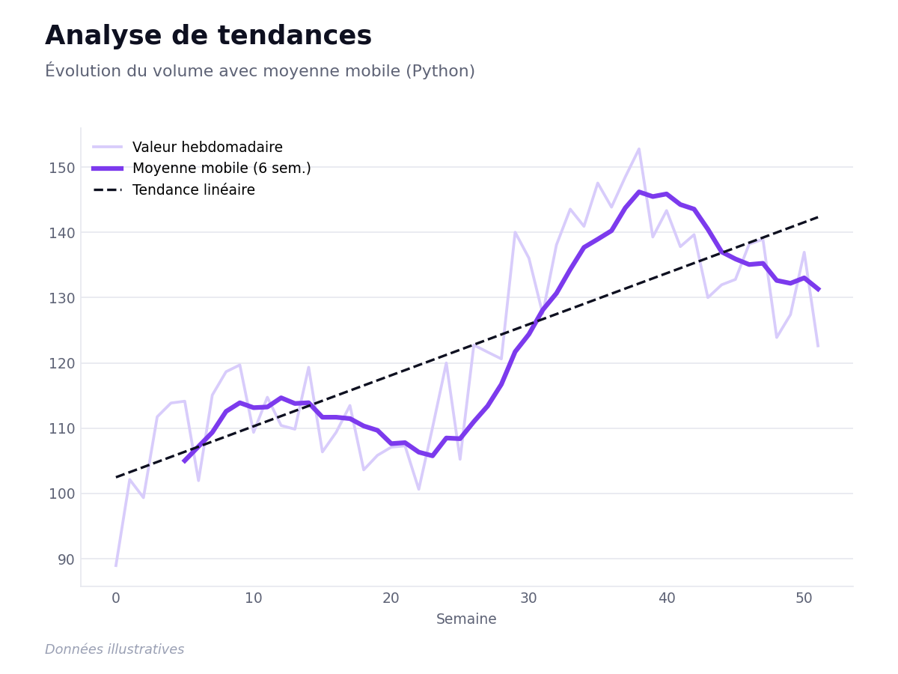
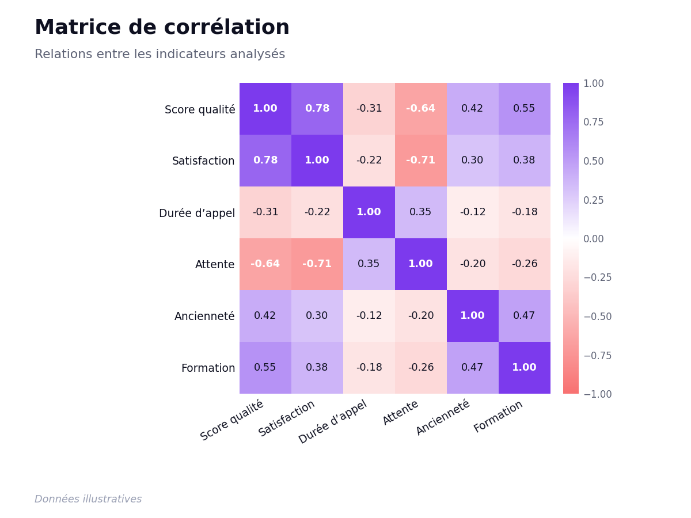
UGIPS GESTION · filiale AXA
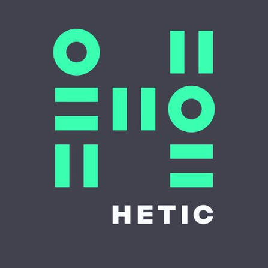
HETIC · Montreuil
Spécialité : analyse de données et intégration de l’IA dans le domaine de la Data Analysis.
Je combine compétences techniques et capacité à traduire les résultats data en décisions compréhensibles par les équipes métier.
Vous cherchez un Data Analyst capable de relier technologie, analyse et enjeux métier ?